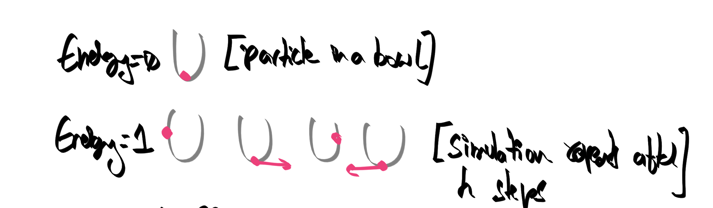
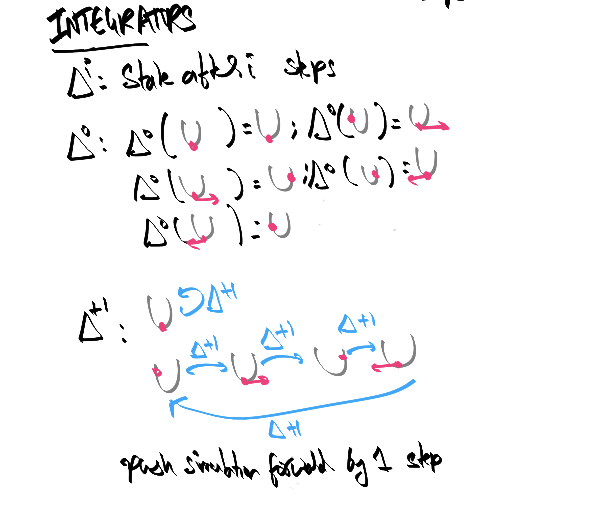
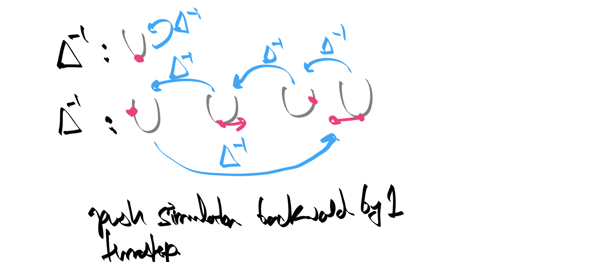
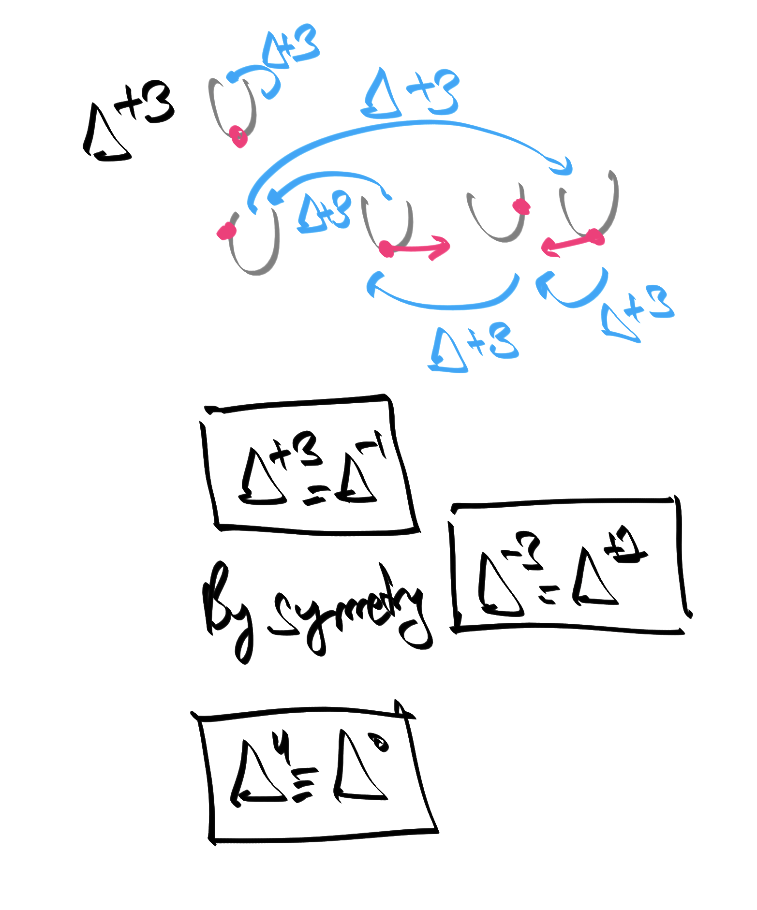

§ Burnside Theorem
For a finite group G acting on a set X, burnside's lemma equates
(i) the number of equivalence classes of X under G's action,
that is, the number of orbits of X with (ii) the average number
of stabilized elements for each g∈G. Formally, it asserts:
∣Orb(X,G)∣=1/∣G∣g∈G∑∣Stab(g)∣
§ As local/global principle
See that the right-hand-side measures "local fixed points" in terms of ∣Stab(g)∣.
The left hand side measures "global fixed points": an orbit O⊆X
is a set such that G⋅O=O. So it's a sort of "global fixed point of G".
The burnside lemms tells us that we can recover the size of the set of
global fixed points (the number of orbits) by averaging the size of the set
of local fixed points (the average of the sizes of the stabilizers).
§ As space/time average
The left hand size is a time average: If we consider X,GX,…GnX,
we will finally be left with the images as the orbits. All other elements
would have been § A rephrasing in terms of integrators
Consider a system of a particle in a well. We consider two energy levels:
that with E = 0, and E = 1. This gives us the following five
states:

now I want to simulate this system, like a good computer scientist. So let's
write the stupdiest one possible, Δ0, that doesn't simulate anything
at all, and Δ+1, which steps the system forward by a single step.
These look like this:

But why only these? Why privilege these time-scales? We should at least
have Δ-1, for the arrow of time is fiction:

We should also have coarser integrators. Hence we contemplate Δ+2 and Δ-2.
Turns out these are equivalent:
 We can also consider
We can also consider Δ + 3. We also see that Δ + 4 = Δ:

So in conclusion, the calculation gives us: